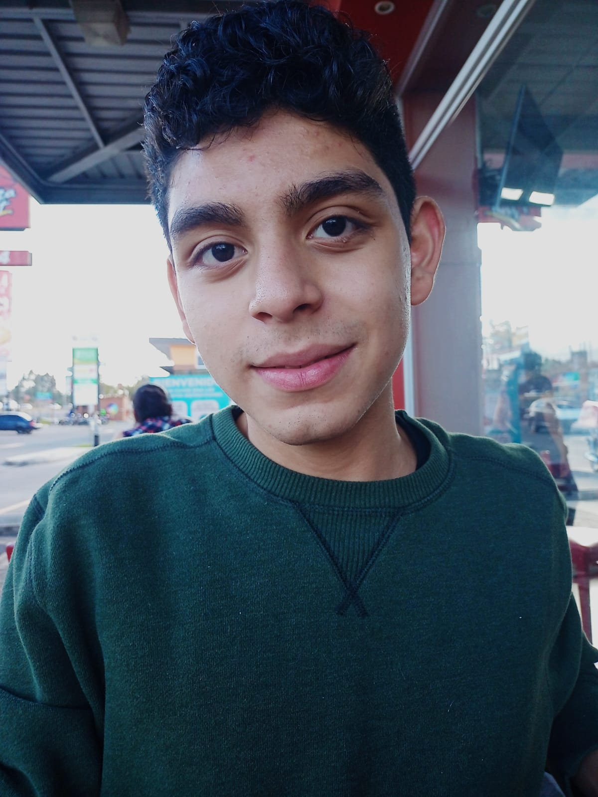

Diego Alessandro Constanza Padilla
Una fotografia de mi persona

Derechos reservados a ඞ
Quien Soy?
Mi nombre es Diego Alessandro Constanza Padilla, actualmente tengo 16 años de edad, estudio en el Instituto Profesional de Computación cursando 5.to Bachillerato en Computación ubicado en la colonia de Villa Nueva.
Mido 1.62m aproximadamente no me he medido con exactitud, generalmente en mi vida me he considerado una persona promedia en todos los sentidos, no es la manera, pero trato de mejorar constantemente. Mis gustos no son nada peculiares, los videojuegos sin entrar en géneros, la música rock-alternativa, la guitarra acústica y empezando con el gusto de la lectura, soy alguien perseverante, muchas veces no confío en mí, pero hago lo que puedo para sentirme lo suficiente sin caer en bajos prejuicios donde la decadencia mental me ha frenado en varios sentidos, trabajador con varios signos de procrastinación, pensativo y algo audaz. No soy de las personas tan duras o firmes que podría ser, muchas veces he tenido una actitud más negativa hacia mí mismo y de una forma llamarla “Corazón de pollo”.
Como soy?
Una forma de decirlo es en diversas ocasiones donde puedo llegar a ser algo reservado llegando al punto de muy pocas interacciones sociales y ser demasiado introvertido, tratando constantemente de excluirme de varias maneras y formas como eventos, salidas, etc. Debido a algunos pensamientos basados sobre cómo puede la gente percibirme después de cierta acción, que puede ocurrir con situaciones donde en mi mente no quedo bien parado del todo, no debería reprimirme pero estoy trabajando en ello, soy muy despistado y algo torpe, demasiado penoso, no siendo fácil para mi hablar en público, soy alguien con mucha paciencia, tolerancia, tomando calma donde es debido y se amerita, no he sido de hablar con muchas personas o de haber tenido muchos amigos, pero llego a ser muy carismático y simpático.
Puedo considerarme bueno en varios temas las cuales me gustan, incluso inteligente en ciertos aspectos, como son las matemáticas y física, la informática, música y tratando de estudiar sobre filosofía.